FORM 4
SCIENCE STREAM
↗
PORTFOLIO / 2026
2010 — NOW
+ STUDENT · CREATOR · DEVELOPER
ISMA ARIF.
FORM 4 · SCIENCE STREAM
I turn curiosity into things I can build.
01 / ISMA
CREATE
BUILD
LEARN
BUILD
LEARN
PORTRAIT
Add your image as
isma-hero.jpg
isma-hero.jpg
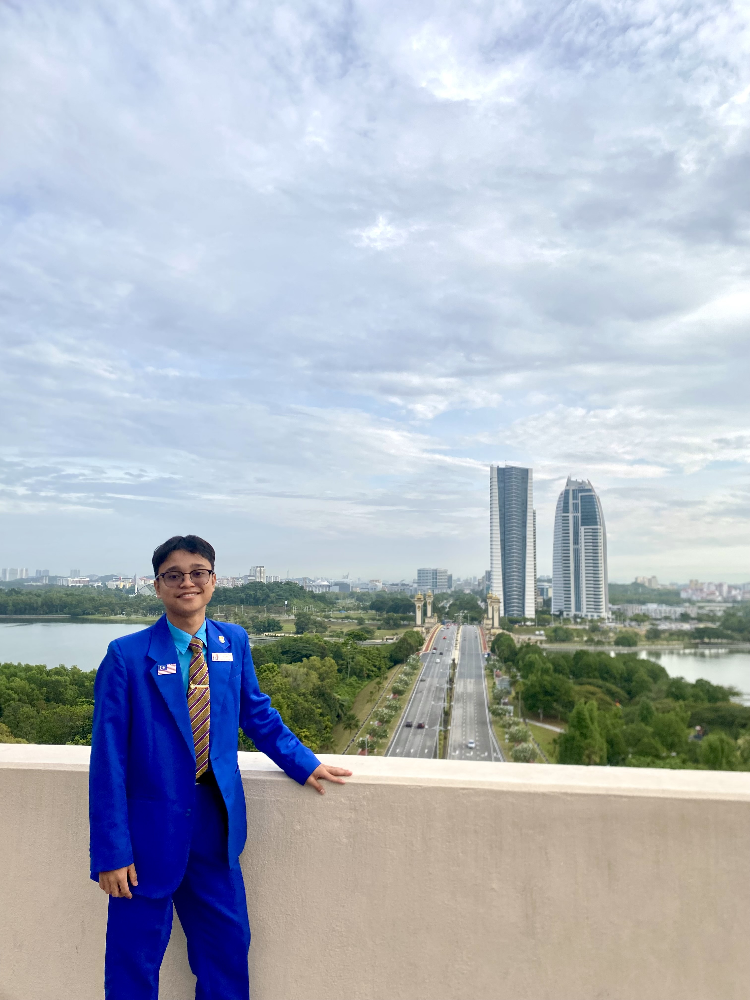
BASED IN MALAYSIA
↗
NATIONAL
COMPETITOR
↗
BUILDER
& CREATOR
↗
02 / WHY I BUILD
CURIOSITY → CREATION
Curiosity becomes
something real.
WHY?
I enjoy asking questions, exploring ideas and figuring out how things work.
What excites me most is when an idea becomes something real — a website, an application, a design or a solution that someone can actually use.
01
I don't just want to understand technology. I want to build with it.
03 / ABOUT ME
WHO I AM
Born in 2010.
Built to create.
I'm a Form 4 Science Stream student at SM Sains Kuala Terengganu.
I enjoy mathematics, science, technology and creative work — especially when I can turn an idea into something people can actually use.
For me, learning is not just about finding the right answer. It's about asking better questions, trying things out and improving along the way.
SESTER / 2026
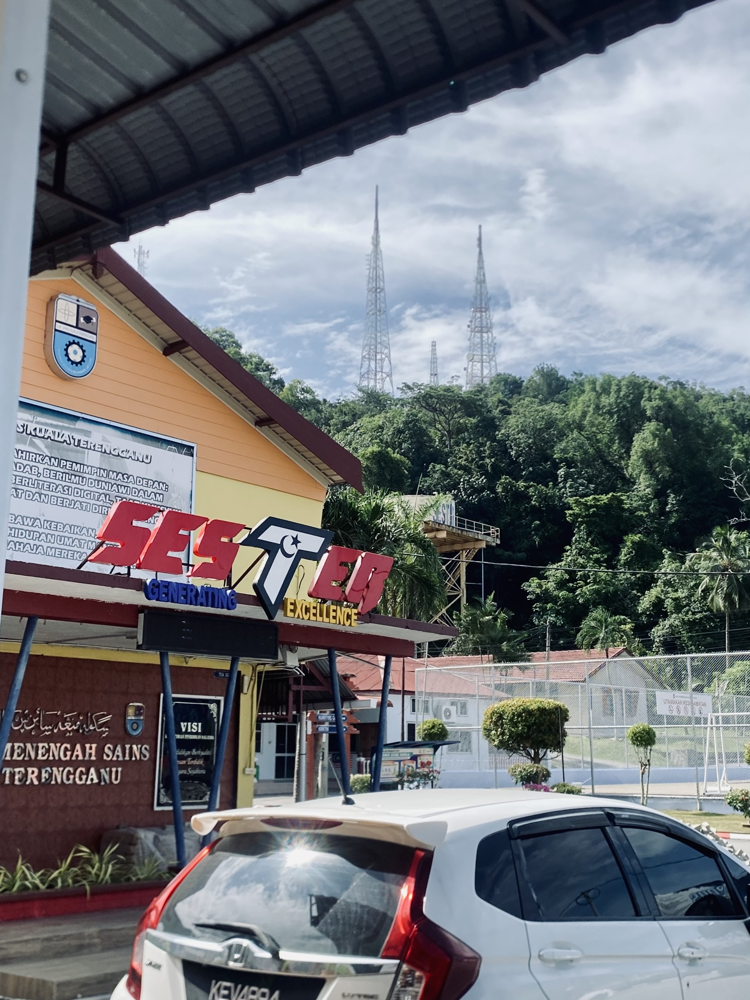
SCIENCE
STREAM
↗
COMPETITOR
↗& CREATOR
↗04 / EDUCATION
LEARNING JOURNEY
My
Journey.
EDUCATION / 01
↗
SK Seri Budiman II
Primary Education
EDUCATION / 02
↗
SM Sains Kuala Terengganu
SESTER · Form 4 · Science Stream
WHAT I ENJOY LEARNING
How I think.
Calculation.
I enjoy finding patterns and working through problems.
Logic.
I like understanding how things connect.
Problem-solving.
I enjoy turning a difficult problem into a workable solution.
These interests eventually led me towards technology and software development.
05 / SKILLS & INTERESTS
WHAT I DO
Things I love
to do.
01
CODING
Build
Build
ideas.
Coding
Website Development
App Development
I like turning ideas into working digital products.
EVIDENCE ↗ RETRACE
isma / build.js
01
const idea = "build";
02
const curiosity = true;
03
create(idea);
04
// make it real.
02
VISUAL COMMUNICATION
Make it
Make it
visual.
Graphic Design
Video Editing
Photography
I enjoy making ideas easier to see and understand.
EVIDENCE ↗ DIGITAL ANIMATION / STORYTELLING
CREATE
03
EXPLORE
Understand
Understand
more.
AI Tools
Mathematics
Physics
I like understanding why things work — and finding different ways to solve problems.
AI
MATH
PHYSICS
04
BEYOND TECH
Lead. Play.
Lead. Play.
Grow.
Sports
Leadership
Technology is only one part of who I am. I also learn through teamwork, responsibility and competition.
LEAD
06 / HOW I BUILD
// MY PROCESS
Every project starts
with a question.
01
NOTICE
Find a problem.
What could work better?
02
THINK
Explore the possibilities.
I research, ask questions and sketch ideas.
03
BUILD
Make it real.
I turn the idea into a prototype or product.
04
TEST
Find what doesn't work.
I test, debug and listen to feedback.
05
IMPROVE
Make it better.
Every mistake gives me something to learn.
OUTPUT / LEARNING
That's how
That's how
I learn.
07 / LEADERSHIP
HIGH COUNCIL / 2026–27
LEADING
BY DOING.
Being a leader is not just having a position.
It means being responsible when nobody is watching, helping others move forward and being willing to step up when something needs to be done.
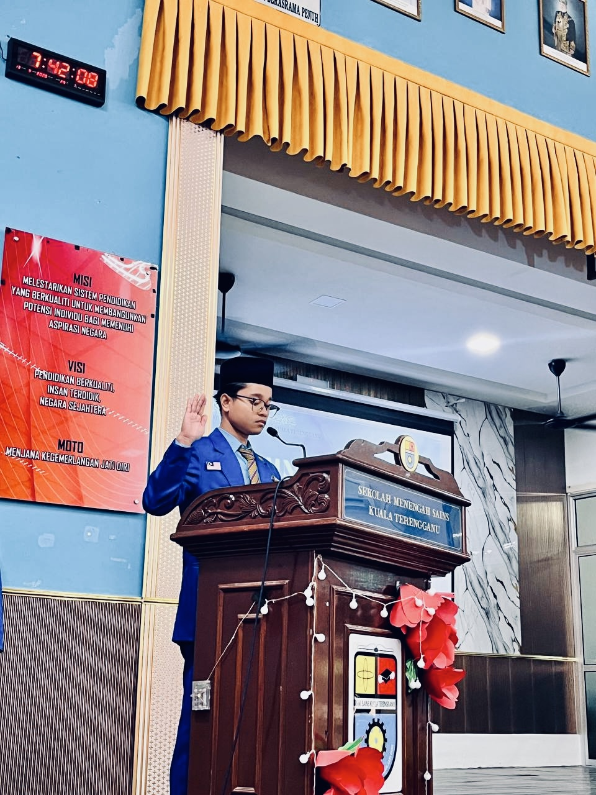
POSITION
VICE
VICE
PRESIDENT
HIGH COUNCIL · 2026/27
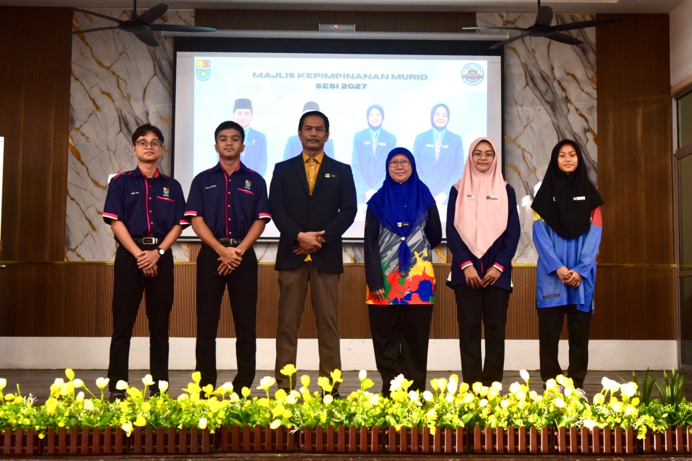
RESPONSIBILITY
TEAMWORK
INITIATIVE
08 / ACHIEVEMENTS
SELECTED MILESTONES
Selected
Achievements.
Every competition gives me a chance to test my ideas, learn from others and improve what I can do.
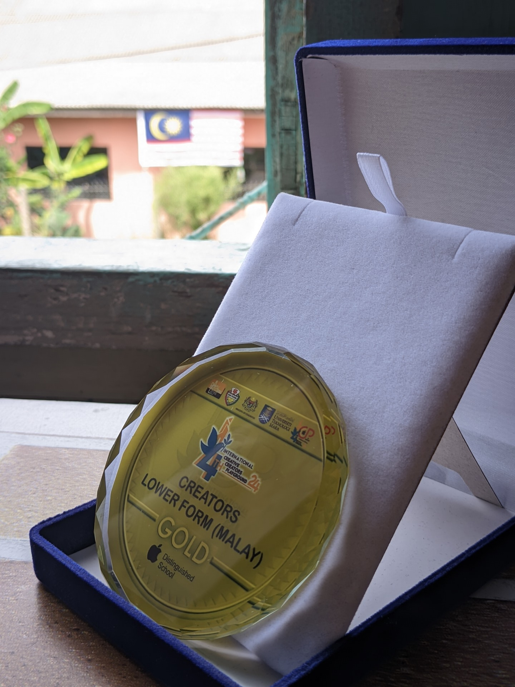
GOLD AWARD
2024 ↗
Digital Animation
International Creative Creators Playground (ICCP@SSP)
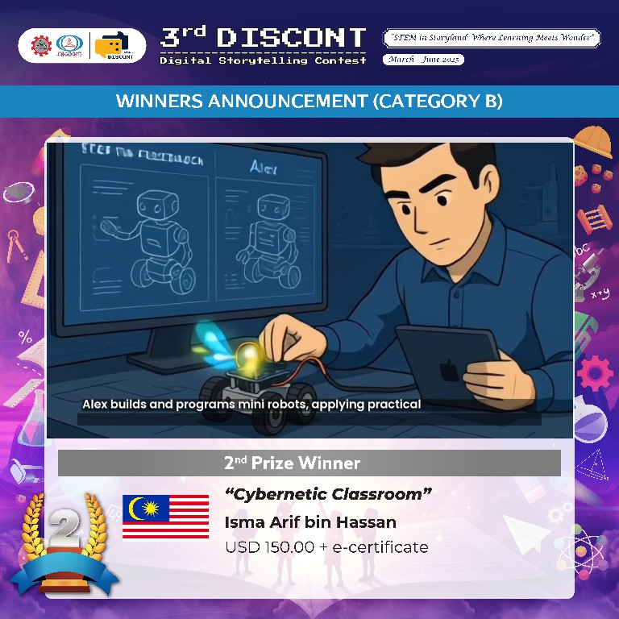
2ND PRIZE WINNER
2025 ↗
Cybernetic Classroom
3RD DISCONT 2025 · Digital Storytelling Contest
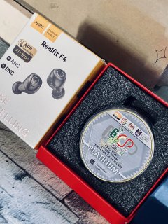
PLATINUM AWARD
2026 ↗
Digital Animation
International Creative Creators Playground (ICCP@SSP)
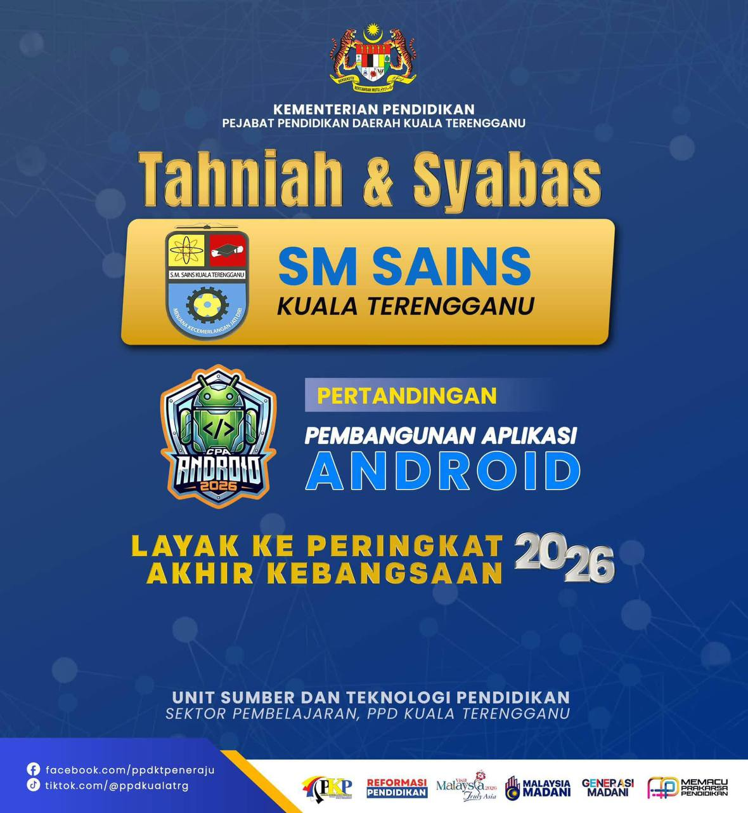
NATIONAL LEVEL
2026 ↗
Cabaran Pembangunan Aplikasi Android 2026
Represented Terengganu at the national level.
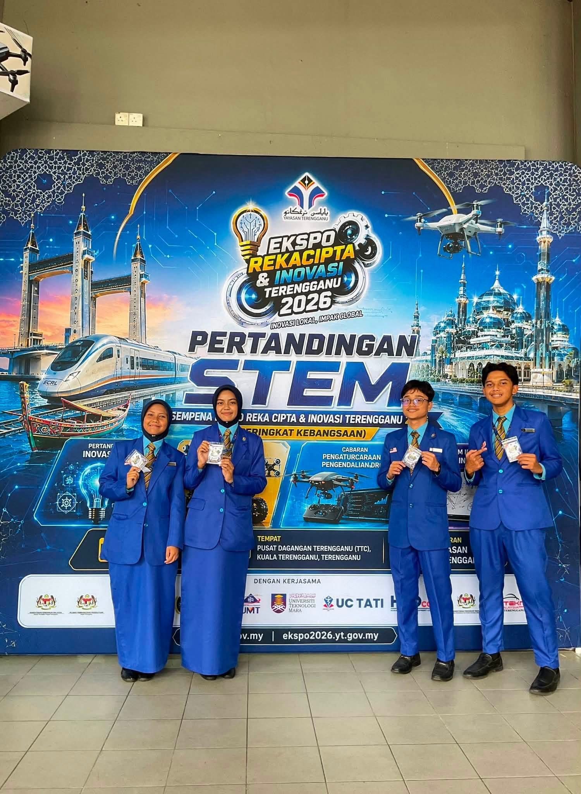
BRONZE MEDAL
2026 ↗
Ekspo Rekacipta & Inovasi Terengganu
Innovation · 2026
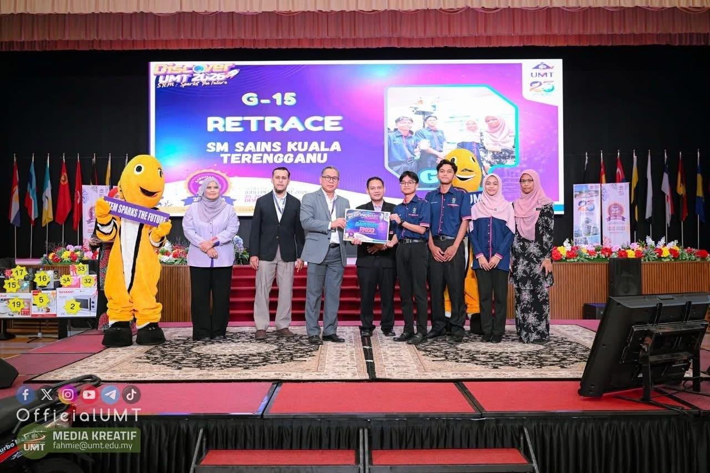
CONSOLATION PRIZE
2026 ↗
Inter-School Innovation
25th Anniversary of Universiti Malaysia Terengganu
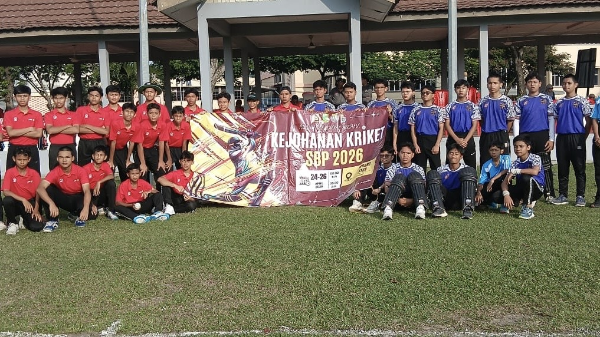
SPORT
2026 ↗
School Representative
SBP Cricket Competition · 2026
09 / FEATURED PROJECT
2026 / APPLICATION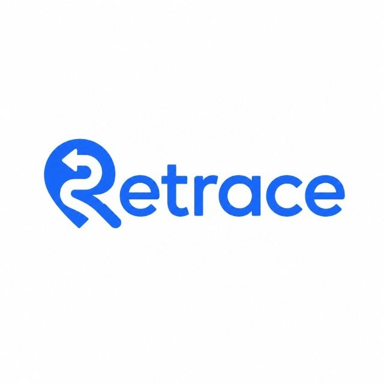
RETRACE.
LOST & FOUND APPLICATION
A smarter way to reconnect lost belongings with their owners.
LOST THINGS.
FOUND SMARTER.
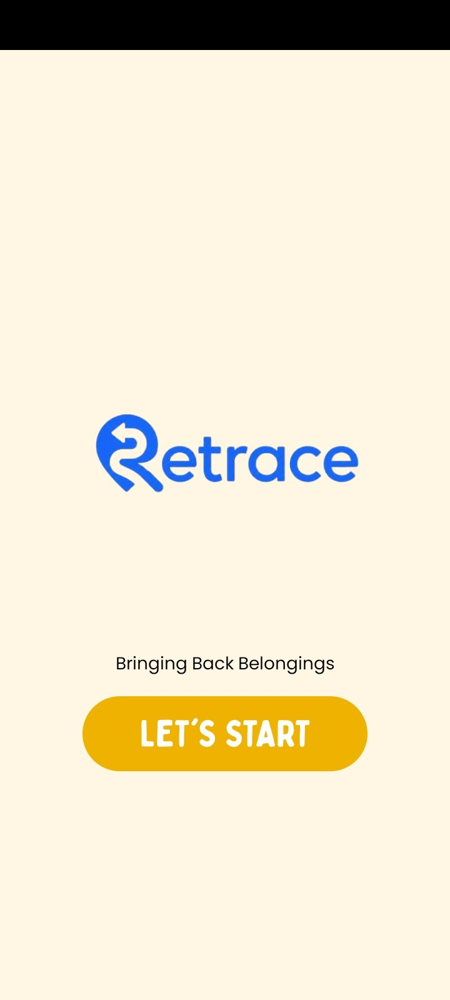
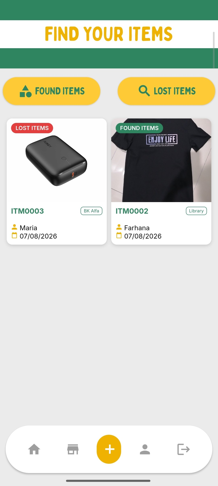
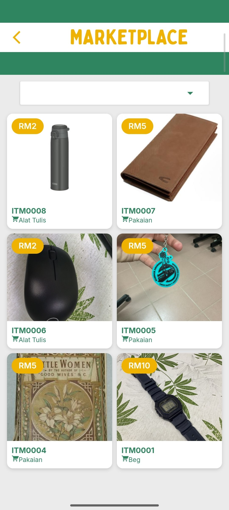
Lost items are easy to report. Managing them isn't.
Lost-and-found systems can become difficult to manage when reports, claims and item information are handled manually.
I wanted to explore how a digital system could make the process more organised and easier to use.
One system. One workflow.
Build one system where students can report, browse and claim lost or found items while administrators manage the process.
Lost & Found
Browse and identify reported items quickly.
Admin System
Organised management for reports and claims.
Marketplace
A new purpose for eligible unclaimed items.
BUILT FOR REAL USE
More than
More than
an interface.
RETRACE includes an admin system to manage reports, item status and the lost-and-found workflow more efficiently.
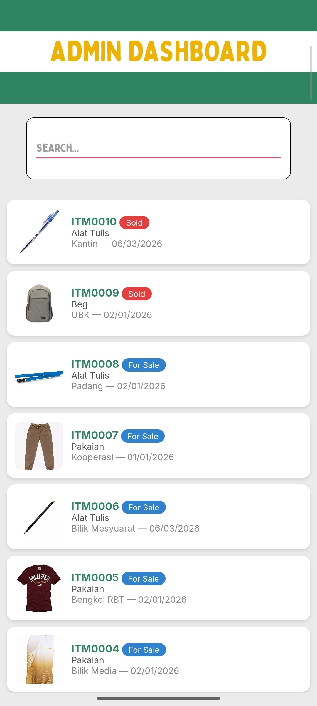
04 / WHAT I LEARNED
Building RETRACE taught me that developing an application is not only about writing code.
I had to think about users, organise information, solve problems, test different ideas and improve the system when something didn't work.
BUILD.
TEST.
IMPROVE.
2026
TERENGGANU → NATIONAL
From a school idea
From a school idea
to the national stage.
Represented Terengganu at the national level in Cabaran Pembangunan Aplikasi Android 2026.
10 / OTHER WORK
SELECTED CREATIVE WORK
Portfolio
Showcase.
ANIMATION
Digital Animation
Exploring how movement, visuals and storytelling can communicate an idea.
DESIGN
Graphic Design
Turning information and ideas into clear visual experiences.
</>
Web Development
Building responsive digital experiences with HTML, CSS and JavaScript.
● REC
Photography / Video
Exploring stories through images, composition and motion.
11 / NEXT CHAPTER
// FUTURE
SOFTWARE
ENGINEER.
COMPUTER SCIENCE
Technology.
Creativity.
Problem-solving.
WHERE I WANT TO STUDY
Two destinations.
Two destinations.
One direction.
DREAM UNIVERSITY / US
↗
MIT
Massachusetts Institute of Technology
UNITED STATES
DREAM UNIVERSITY / MALAYSIA
↗
UTP
Universiti Teknologi PETRONAS
MALAYSIA
AFTER SPM
The path
The path
ahead.
2027
SPM
Complete my secondary education at SM Sains Kuala Terengganu.
NEXT STEP
Pre-University
Build a strong academic foundation before entering university.
FIELD
Computer Science
Develop deeper knowledge in computing, software and technology.
UNIVERSITY
Degree
Study at university while building projects and expanding my technical skills.
REAL WORLD
Industry Experience
Gain real-world experience through projects, internships and software development.
PROFESSIONAL DEVELOPMENT
Keep Growing.
Continue developing technical, professional and leadership skills.
THE DESTINATION
Software
Software
Engineer.
Turning ideas into technology that matters.
“To share knowledge and help others understand the importance of technology.”
12 / AI & DEVELOPMENT
MY WORKFLOW
AI is part of
my workflow.
I used AI throughout the development of this portfolio — from planning and coding to debugging, testing and refining the final experience.
01
PLANNING & PROBLEM SOLVING
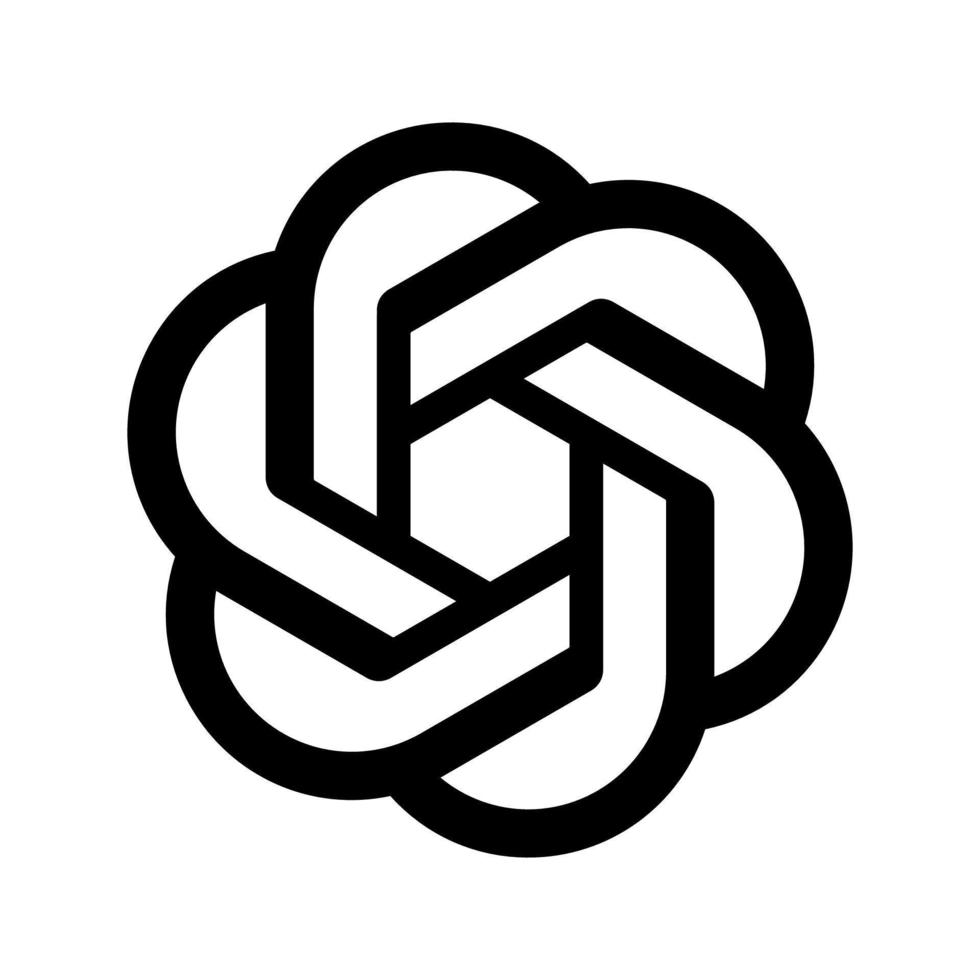
ChatGPT
Helped me plan the website, organise content, improve code and solve development problems.
02
DEVELOPMENT
Codex
Used as a coding assistant to develop features, improve code and speed up development.
03
CODE REVIEW
Claude
Used to review code, explore alternative solutions and improve implementation.
04
RESEARCH & IDEAS
Gemini
Helped with research, exploring ideas and providing another perspective during development.
05
VISUAL DESIGN
Canva
Used to prepare visual assets and support the overall visual presentation of this portfolio.
DEVELOPMENT PROCESS
AI assisted the process.
MY IDEA
→
AI ASSISTANCE
→
CODE
→
TEST
→
REFINE
→
WEBSITE
AI assisted the process.
I made the decisions.
13 / AI VS ME
ASSISTANCE ≠ OWNERSHIP
AI assisted.
I decided.
AI / ASSISTANCE
01
- Explore ideas
- Suggest code
- Identify problems
- Compare solutions
- Improve wording
- Speed up repetitive work
ISMA / DECISIONS
02
- Choose direction
- Make design decisions
- Test the website
- Verify results
- Debug problems
- Decide what stays
AI can generate possibilities. I decide what becomes part of my work.
14 / RESPONSIBLE AI
THINK FIRST
Use AI.
Keep thinking.
I believe AI should be used as a tool to support learning and creativity, not to replace our own thinking and effort.
I try to understand and verify AI-generated information while using AI responsibly to turn ideas into something meaningful.
QUESTION
Don't accept everything immediately.
VERIFY
Check important information.
UNDERSTAND
Know what the output actually means.
OWN
Take responsibility for the final work.
Question. Verify.
Understand.
Own.
15 / REFLECTION
WHAT AI TAUGHT MEBefore using AI, I thought its biggest advantage was speed.
While building this portfolio, I realised that the quality of the result still depends on the questions I ask, the choices I make and how carefully I check the answer.
AI helped me explore ideas, solve coding problems and improve my work faster.
BUT IT ALSO TAUGHT ME
SOMETHING MORE IMPORTANT:
USING AI WELL
USING AI WELL
REQUIRES ME
TO THINK BETTER,
NOT THINK LESS.
AI helped me build this website.
The journey helped
me build myself.
16 / MEET ISMA
00:45 / VIDEO
Hi, I'm
Isma.
MEET ISMA
HI, I'M ISMA.
INTRO VIDEO / 00:45
ISMA ARIF
PORTFOLIO / 2026
+ × ○
JUST
DO IT.
THINK. BUILD. LEARN. REPEAT.